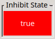

The Engine View allows monitoring and control of scans running in an engine process.
It is divided into an Engine group for the engine process, Scan group for the currently loaded scan with Status Table and State indicators for Engine and Inhibit state.

Following the Engine text label the host and port of the engine process connected to (if any) is shown inside of brackets. Depending on the connection state, certain buttons are enabled/disabled.
Inside the engine group there are buttons to control the engine process. Their function is described in the table below:
| Button | Description |
|---|---|
| Start | Creates an engine process with the parameters (i.e. host and port) specified in the preferences and connects to it. |
| Kill | Sends a request to the engine to terminate itself. |
| Connect | Connects to an existing engine process at host:port as specified in the preferences |
| Disconnect | Disconnects from the currently connected engine process. |
A checkbox controls whether scans arriving at the Engine will be simulated or executed normally (with Channel Access). In Simulation mode neither motor axis are actuated nor channels are triggered/measured but a data file with pseudo constants will be created.
Keep in mind that the simulation setting only applies to subsequent scans, i.e. the mode of a scan already loaded into the engine cannot be changed anymore.

If a scan is currently loaded in the engine the controls inside the scan group become active and the name of the loaded file is shown as a suffix of the Scan label of the group.
Several buttons are available to influence the execution of a scan. Their function is described in the table below:
| Button | Description |
|---|---|
| Play | Starts (or continues a paused) scan. An active inhibit state will be overwritten. Any pause condition which evaluated to true is now in an overridden state as long as it becomes false again. |
| Pause | Pauses the whole scan, i.e. each chain is paused. Overrules any inhibit states. A scan paused this way can only be resumed by pressing the Play-Button (even if all pause conditions suddenly evaluate to false). |
| Stop | Stops the scan after finishing the current scan point. While pending positionings are ignored, post scan actions of the current scan module (and the parents if nested) are still executed. |
| Skip | Finishes the current scan point, skips the remaining scan points of the current scan module, executes post scan actions and continues with the next scan module (if any) |
| Halt | Stops the scan and immediately stops all motor axes. |
| AutoPlay | if activated (toggle button) loaded scans (and iterations if repeat count > 0) start automatically |
Besides the available buttons there are some status fields as well as options to repeat the currently loaded scan and add comments to it. See details below:
The Repeat Count displays the number of times the scan should be repeated. As long as the scan is not finished the repeat count is editable.
Shows the path and name of the file the measuring data is written to.
Allows writing (multiple) comments to the current data file. When pressing the button „Send to File” the entered text is send to the engine (which saves it in the file with a timestamp).
Shows the progress of the current scan by showing the absolute and relative ratio of finished positions to the number of total positions. The background color fill also represents the relative ratio.
Shows the chains, scan modules and their states of the currently loaded scan. A remaining time as well as additional event information (if any) are also shown.
If simulation is active the scan group title shows a modified title and is colored in red:
Additionally the window title of the application (and its title in the task bar) will be prefixed with „SIM: ”.
The Engine State Indicator shows the current status of the (connected) engine (if any). The table below shows all possible states and their meaning:
| State | Description |
|---|---|
| The GUI (Engine View) is not connected to an engine process. | |
 | No scan is currently loaded in the (connected) engine process. |
 | A scan is loaded in the (connected) engine process but not started yet. |
 | A scan is currently executing in the (connected) engine process. |
 | The currently executing scan in the (connected) engine process was paused by a connected client (with the Pause button). |
 | The currently executing scan in the (connected) engine process was paused due to a pause condition. For details see below (inhibit state). |
Shows the current status of the inhibit state defined in the currently loaded scan (if any). The table below shows all possible states and their meaning:
| State | Description |
|---|---|
| The GUI (Engine View) is not connected to an engine process. | |
 | There either is no scan loaded in the (connected) engine process or the currently loaded scan does not have any pause conditions defined. |
The inhibit state of the currently loaded/executing scan evaluates to false (no pause condition is satisfied). | |
|  | The inhibit state of the currently loaded/executing scan evaluates to true. |
 | The inhibit state of the currently loaded/executing scan evaluated to false but was overridden by the user (by pressing the Play button). |
To learn more about Pause Conditions / Inhibit-State see here.
The inhibit state indicator only shows the result (logical or) of all defined pause conditions of a scan. In order to identify which pause condition was responsible a mouse over tooltip of the indicator shows the states of each pause condition:

The status of each condition is shown as symbols with the following meaning:
| State | Description |
|---|---|
 | Inhibit state evaluates to false. |
 | Inhibit state evaluates to true. |
 | Inhibit state evaluated to true but was overridden. |
If any pause condition evaluates to true the scan is paused. If all pause conditions are either false or overridden the scan resumes/executes.
To learn more about Pause Conditions / Inhibit-State see here.